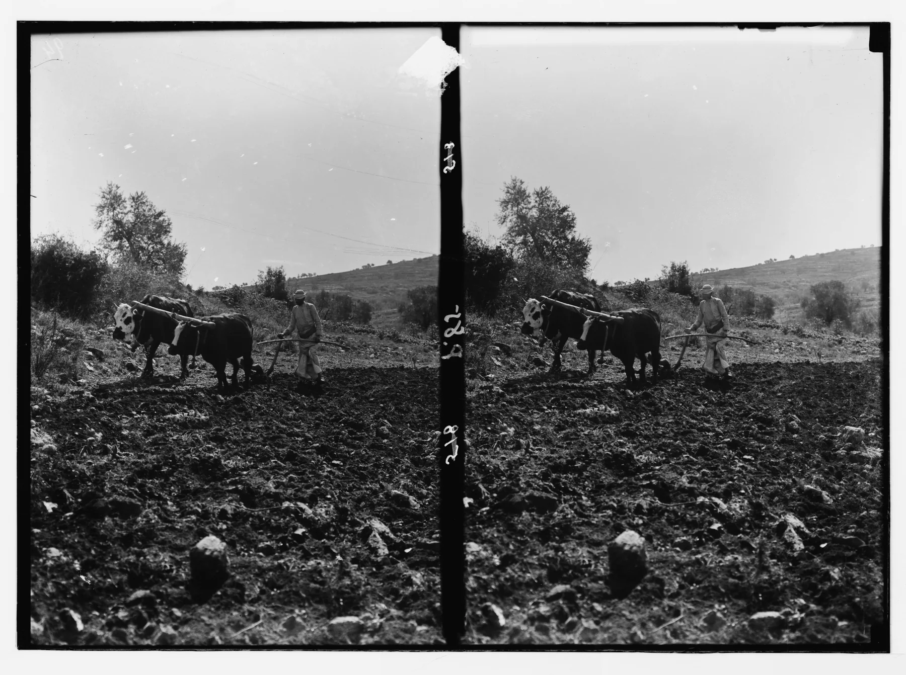
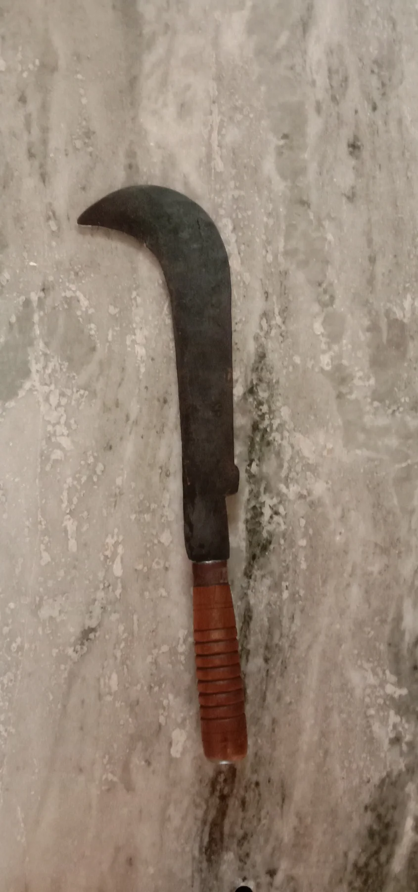
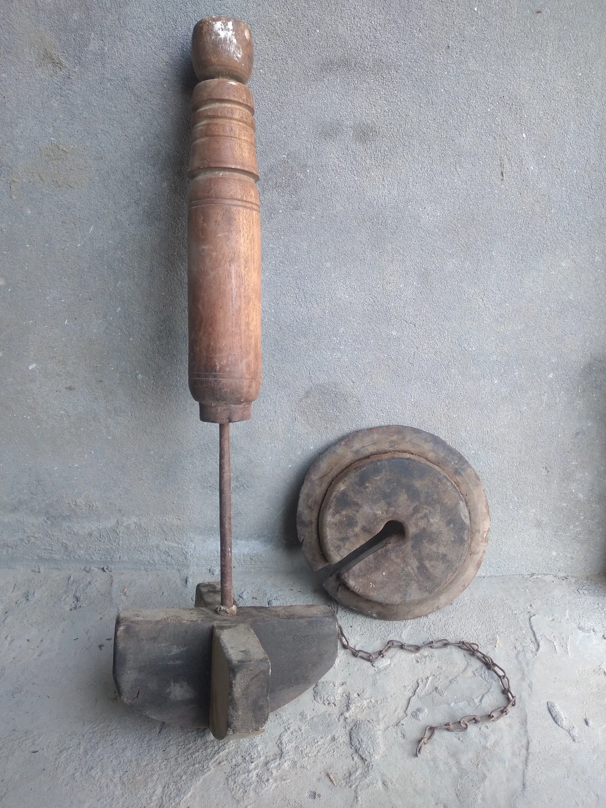
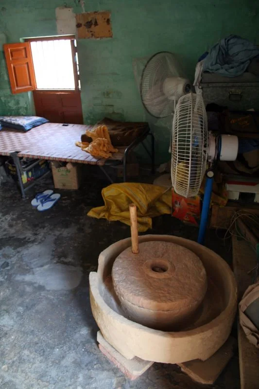
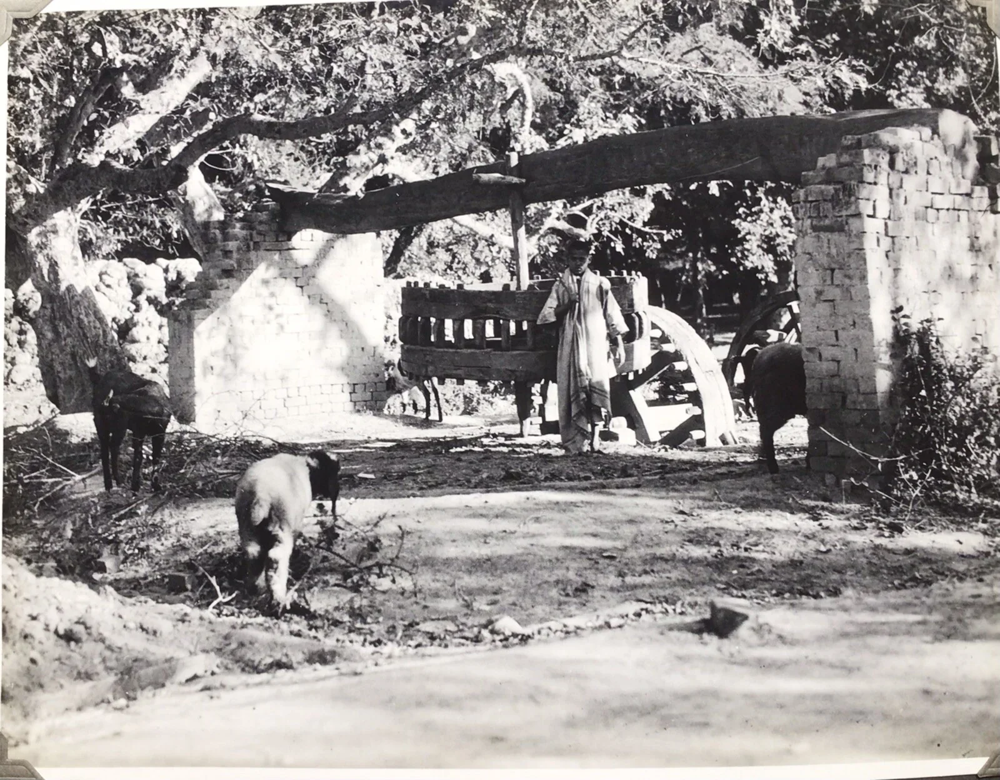

THE OBJECT ARCHIVE · ਵਿਰਾਸਤੀ ਵਸਤਾਂ
Objects that hold
our memory.
Explore traditional objects by their Punjabi names, everyday uses and the knowledge carried by the people who used them.
Photographs are illustrative references to the object or its documented use; an image alone does not establish a specifically Punjabi provenance. Source and licence details are listed separately.
 ਹਲ
ਹਲHal ਹਲ
A traditional plough used to open and turn soil before sowing.
View record ↗
ਪੰPanjali ਪੰਜਾਲੀ
A yoke associated with harnessing draught animals for farm work.
View record ↗
ਦਾDaati ਦਾਤੀ
A hand tool used for cutting crops, grass and plant material.
View record ↗ ਚੁੱ
ਚੁੱChulha ਚੁੱਲ੍ਹਾ
A traditional household hearth used for cooking with solid fuel.
View record ↗
ਮMadhaani ਮਧਾਣੀ
A hand-operated churn used in preparing butter from curd.
View record ↗ ਮੰ
ਮੰManja ਮੰਜਾ
A woven cot used for sitting, resting and sleeping.
View record ↗
ਚੱChakki ਚੱਕੀ
A hand-operated mill traditionally used to grind grain.
View record ↗ ਗੱ
ਗੱGaggar ਗੱਗਰ
A traditional vessel for carrying or storing water.
View record ↗
ਚCharsa ਚਰਸਾ
An animal-powered water-lifting arrangement for irrigation.
View record ↗Image licences and full source details are available on the image credits page.
No objects found. Try another search.
These are introductory records. Names and descriptions can vary by district and family tradition. Records are not marked as historically verified until a regional source and image provenance are added.